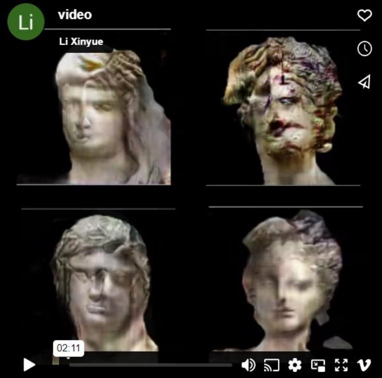

Video
Video from this Shaping the Past
Images
破坏雕塑已经成为政治家行使权力的一种手段。例如，在1999年北约轰炸南斯拉夫期间，布迪萨夫奇修道院和科索沃的大多数清真寺遭到破坏。随后，塞尔维亚领导人斯洛博丹·米洛舍维奇将破坏归咎于阿尔巴尼亚人，并利用这一事件加强了他对科索沃的领土主张。为了引起观众对技术进步所带来的潜在虚构力量的思考，我利用机器学习生成了被摧毁的雕塑的图像。这项工作质疑我们所看到和听到的是否真实，并试图激发观众在技术进步的背景下思考现实与虚构之间的界限，以此提高人们对媒体操纵时代本质的认识。